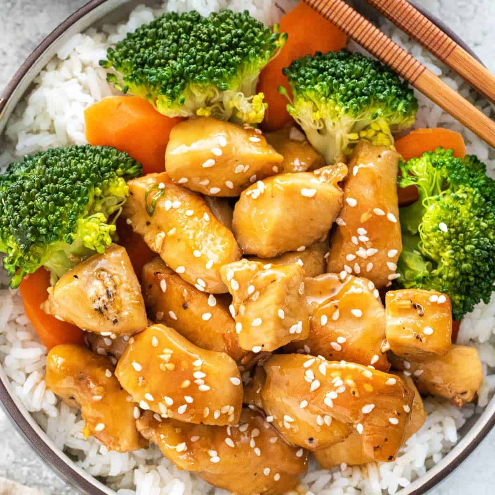

Teryaki Chicken

Description
Another cheap and easy recipe only requiring four ingredients!
Ingredients
- Chicken Breasts
- Instant white rice
- Bag of steamable frozen vegetables
- Bottle of Kikkoman teryaki glaze
Cooking steps
- Cut chicken breasts into bite sized cubes and cook on stove in a pan over medium-low heat with a
little olive oil, once fully cooked pour in the glaze and stir well
- Cook desired amount of instant rice in microwave according to the brand's instructions
- Steam vegetables according to the brand's instructions
- After all ingredients are ready to go, make your bowl or plate however you desire and enjoy!
Return to home